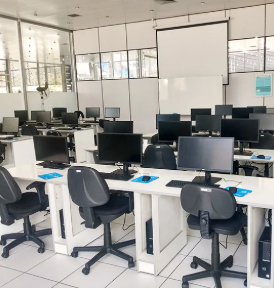
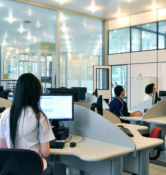
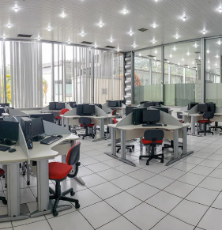
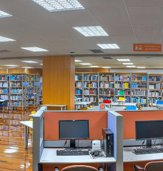

CURSO TÉCNICO INFORMÁTICA
O objetivo do MédioTEC em Informática é formar profissionais de nível técnico na área de Tecnologia da Informação, com habilidades para desenvolvimento de sistemas em software e a sua respectiva integração com hardware e automação, manutenção em computadores, celulares e tablets, desenvolvimento e gestão de projetos na área de TI.
O processo seletivo do MédioTEC em Informática ocorre semestralmente. As vagas são destinadas aos candidatos aprovados no processo seletivo. As informações para os processos seletivos são divulgadas em meados de abril e setembro de cada ano. Duração de 3 períodos semestrais das 18h25 às 22h35.
As inscrições são realizadas exclusivamente pelo site da VUNESP, divulgado aqui no site do colégio e nas nossas redes sociais.



